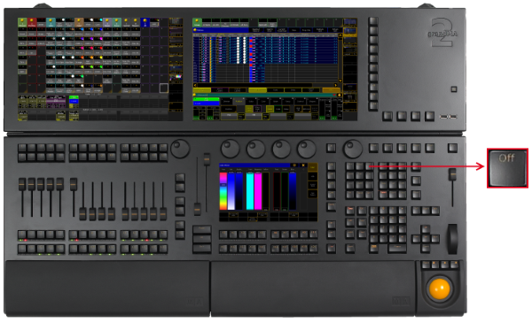
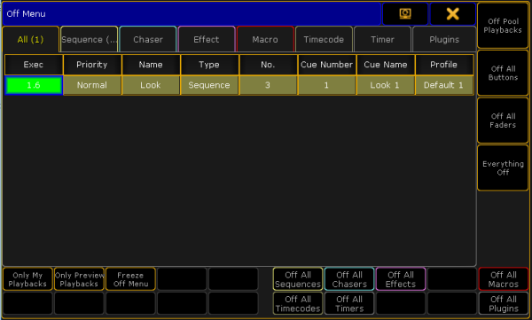

Off Key
The key Off is located in the command area on the right of the key Select.

Location key Off
- Pressing Off enters the Off keyword into the command line.
[Channel]> Off
- Pressing and holding Off and pressing several executor buttons turns off the executors.
- Pressing Off Off opens the Off Menu.

Off Menu